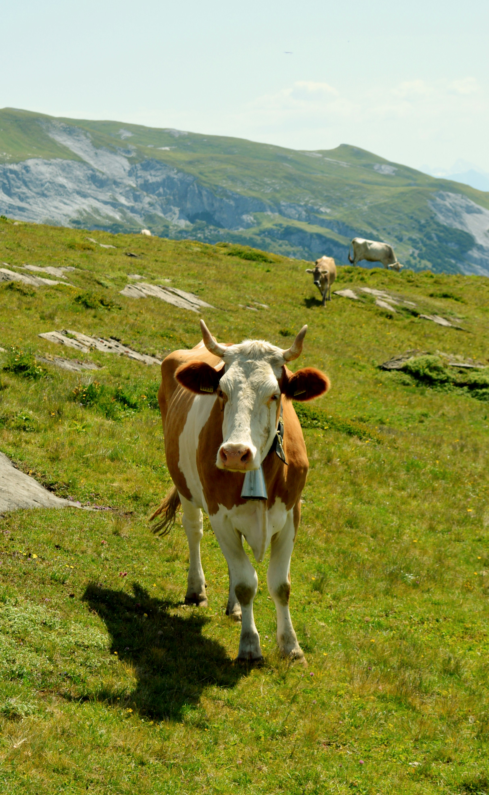

Segredos Escamados
Uma Jornada pelos Reinos dos Mamíferos

Mamífero
Imaginem um grupo de amigos super diferente! Tem o peludinho que late, o gigante que come capim, o nadador
esperto
e até um voador que adora dormir de cabeça para baixo! Quem são esses? Os mamíferos, claro!
Nessa aventura pelo mundo peludo, vamos descobrir juntos os segredos desses animais incríveis
Características gerais dos mamíferos
Pelo: A maioria dos mamíferos usa um casaco quentinho de pelos para se proteger do frio e do calor. Alguns têm
pelos longos e macios, como os coelhos, enquanto outros têm pelos curtos e espetados, como os porcos-espinhos.
Leite: As mamães mamíferas têm um superpoder: elas produzem leite nutritivo para alimentar seus filhotes! Essa é
uma das características que nos diferenciam de outros animais.
Sangue quente: Os mamíferos conseguem manter a temperatura do corpo sempre a mesma, mesmo quando está frio lá
fora. Isso é porque eles têm um sistema especial que funciona como um foguinho interno!
Respiração: Para ter energia, os mamíferos respiram oxigênio do ar. Eles fazem isso usando pulmões, que são como
saquinhos de ar dentro do corpo.
Quantos tipos existem ?
Preparem-se para se surpreender! Existem mais de 5.000 espécies de mamíferos no mundo! Isso significa que há
uma
variedade enorme de formas, tamanhos e cores.
Grandes e pequenos: Do minúsculo musaranho, que cabe na palma da mão, até a enorme baleia-azul, do tamanho de um
prédio de 20 andares!
Terrestres, aquáticos e até voadores! Os mamíferos podem viver em qualquer lugar: na terra, na água e até mesmo
no
ar, como os morcegos.
Carnivoros, herbívoros e onívoros: Alguns mamíferos comem carne, outros preferem plantas e alguns comem um pouco
de cada coisa.
Alguns exemplos incríveis:
Cachorros: Os melhores amigos do homem! São leais, carinhosos e adoram brincar.
Gatos: Independentes e cheios de personalidade, os gatos conquistam a todos com suas manias fofas.
Cavalos: Poderosos e majestosos, os cavalos são usados para montaria, tração e até para esportes.
Vacas: Nos fornecem leite e carne, além de serem muito importantes para a agricultura.
Baleias: Gigantes dos oceanos, as baleias são criaturas fascinantes que nos encantam com sua inteligência e
beleza.
Morcegos: Únicos mamíferos que voam, os morcegos são essenciais para o controle de insetos e para a polinização
de
plantas.

Curiosidades para se divertir
Sabiam que os elefantes são os únicos mamíferos que não sabem pular?
As preguiças dormem até 20 horas por dia!
Os rinocerontes têm chifres feitos de queratina, o mesmo material das nossas unhas!
Os golfinhos se comunicam entre si usando sons e assobios.
As girafas têm línguas azuis de até 45 cm de comprimento!
Como cuidar dos nossos amigos mamíferos?
Respeitar seu habitat: Não devemos invadir as florestas e outros lugares onde os mamíferos vivem.Proteger as espécies em extinção: Alguns mamíferos estão em perigo de desaparecer. Precisamos cuidar deles para que não sejam extintos.
Não maltratar os animais: Todos os animais merecem respeito e cuidado.
Adotar um animalzinho: Se você tem condições, adotar um animalzinho de estimação é uma ótima maneira de cuidar de um mamífero e ter um companheiro fiel.
Lembrem-se: os mamíferos são parte importante do nosso planeta e merecem nossa proteção. Ao aprendermos mais sobre eles e cuidarmos deles, estamos cuidando do nosso próprio futuro.
